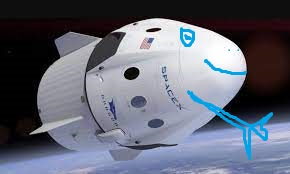

Hyperblog
Tu blog de cabecera
Este es el titulo atractivo e interesante del post
Y este es el párrafo de inicio donde vamos a explicar las cosas increibles que se pueden hacer con ramas

Los blogs son la mejor forma de compartir informacion y tus ideas. Mucho mas que ir a conferencias o salir en Youtube. Excepto si eres un Rockstar. Pero estadisticamente no lo eres.... Por ahora.
Suscribete y dale like